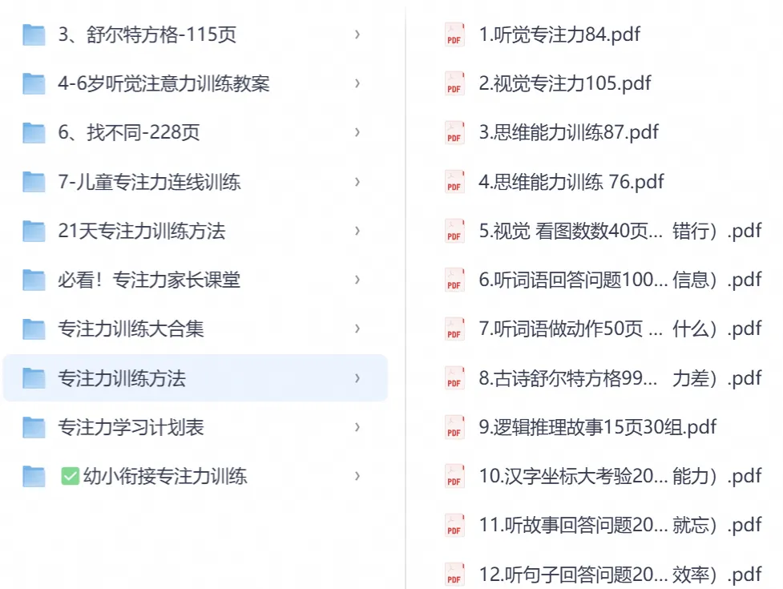

这篇来回答一个宝子的问题。
圆圈兄弟一岁多、两岁的时候，我没有专门培养过他们的专注力。
那时候，我陪他们俩做得最多的事情，就是读书。
我就抱着他们俩，一左一右，拿着图画书，指着上面的图案，自言自语：
“这是什么？”“这是妈妈。”“这是兔子。”
一开始，他们也没多大兴趣，
我就买洞洞书、纸板书，挑一些画面有趣的，让他们摸摸、翻翻。
慢慢地，他们习惯了我陪在旁边，也开始愿意看书了。
白天听听儿歌，玩玩大块积木，晚上就给他们读睡前故事。
再大一点，他们就会各自去翻书看了，也能安安静静看上好一会儿。
这就是我家当时的日常，也没安排什么特别的训练。
不过，想让两个一样大的孩子安安静静地做一件事，确实不容易。
比如圈圈在一边看书，圆圆就凑过来捣乱，把书抢走，惹得圈圈哇哇大哭，我只好再找一本书哄他。
有时候，圆圆在一边安静搭积木，圈圈也会冷不丁一拳砸过去，把积木推倒，那圆圆气不过，就一拳揍回去....然后两人就撕打起来。
我……
这种事情，别说双胞胎了，家里有两个差不多大的孩子，都太常见了。
有时候，你刚把一个安顿好，另一个就来搅局。
我的办法也没多复杂。
能哄的就哄一哄，能换个活动就换一个，实在玩不到一块儿，就先分开一会儿。
至于抢东西、打人，该制止还是得制止。
但我也没要求他们每次都能安安静静地看书、搭积木...
反正，书可以接着看，积木倒了可以重新搭。
现在圆圈兄弟都六年级了，两个孩子互相干扰的情况，依然存在。
最明显的就是写作业。
一个在旁边写作业，另一个稍微有点动静，他就忍不住扭头看。
一个哼两句歌，另一个跟着接上；一个突然说句话，另一个立马回应。
本来各自好好写着，没一会儿，两个人就聊起来了。
所以后来，我们干脆错开写作业的时间，让他们各自回屋里写，辅导双胞胎写作业：动嘴的合伙搞，动笔的分开干
效果反而好一些。再说3遍！双胞胎写作业，不要在一起！不要在一起！不要在一起！
回头想想，两个孩子互相影响，真不一定就是谁的专注力不好。
尤其是双胞胎，从小一起长大，对方的一举一动都太熟悉了。
一个动一下，另一个就容易被吸引过去。
有时候，可能就是两个人离得太近，彼此太容易干扰了。
所以，孩子做事容易被打断，除了关注孩子本身，也可以看看周围的环境。
能不能减少一点干扰？能不能给孩子留一点独处的空间？
有时候，调整一下环境，比在旁边反复提醒专心一点更管用。
如果有家长特别执着专注力培养，我这里也有一些专注力训练资料，既有适合低龄孩子的专注力小游戏，也有适合大一点孩子的训练资料，还有给家长的课堂，教家长如何培养孩子的专注力。
有需要的宝子，可以评论区回复【专注力】，我整理一下分享给大家。
每个孩子的情况不一样，大家按需取用就好。
养一对双胞胎，已经够忙活了。
能学一点是一点，能省点心就省点心，
60分就行了，
留下40分给自己喘口气哈！
-end-
双胞胎一起写作业：偷懒有人陪，卡壳会传染，闯祸还能分工
辅导双胞胎写作业：动嘴的合伙搞，动笔的分开干
辅导双胞胎写作业，是我40岁最大的劫

